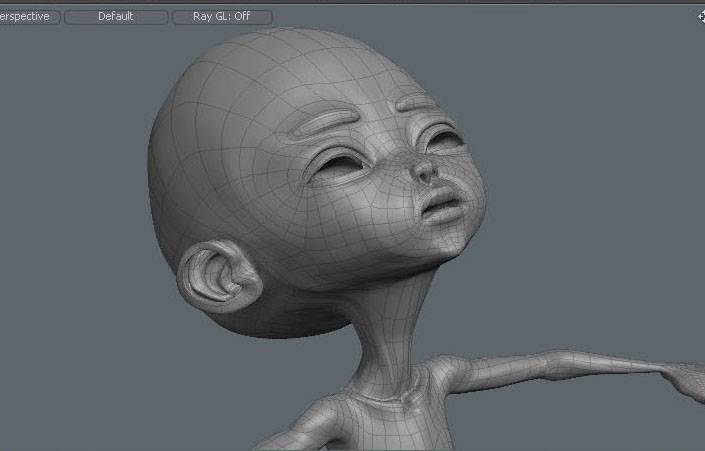

Notebook Lesson 5
- Yonseo Rigging Notes
Skinning
In this lesson we will cover skinning, adjusting weights, and weight painting. Skinning is the process of binding the 3D mesh to the skeleton joints created. This allows the skeleton to influence the movement of the surface vertices on our model and create animation.1) Bind
[Enter Setup] by clicking the setup button at the top. A yellow border will appear when setup mode is ON. Now select your skeleton and all its bones, lastly ctrl+select the model. Click the [bind] button on the left panel.
Bind type: Heat, and press ok.
A rainbow of colors should appear around your model. These colors are skin weights and they show
how much effect each bone has on the surface of the model.

Deselect everything and [Exit Setup]. Now test your bone rotations. Select a bone and rotate it.
If your model moves or rotates this means skin weights were applied successfully. If it didn't work,
go back and check the ends of your skeleton bones and make sure they do NOT protrude outside the mesh model.
Another reason your bind will not work is if your model has an open hole somewhere or there are overlapping vertices
sharing the same polygon.
2)Adjusting Weights
Select your head bone and press 'e' to rotate your head backwards. When rotating the head bone, notice how we have a distortion or a stretch of the face as seen on the left. This is a great effect if we want to simulate a cartoon effect. However for more realistic purposes we want to keep the face in the same form shown on the right. To do this we have to "adjust weights" to increase the weight amount from 0% to 100%. The closer to 100% the more weight effect it will have on the mesh.Think of this as a magnet. The higher the percentage from 0 to 100, the stronger the magnetic pull force. So our head bone will act as a magnet and as it moves or rotates it will pull the vertices surrounding the bone.
Let's try this,
Select your model and switch to vertices selection mode. Middle mouse lasso select the vertices you want affected by the weights.

Once you have selected your vertices, switch over to item mode. Select your head bone frist and lastly ctr+select the model.
Then switch to vertices mode. You will see all your vertices selected in yellow color. Now you can activate [adjust weights] on the left panel under the weights tab.
When you click [adjust weights] many numbers will appear over your model. These numbers range from 0 to 100. 0 being the weakest and 100 being the strongest.
You can left click over these numbers and drag left or right to increase and decrease the number. We want to increase all the numbers to 100%
so when the head turns it will follow the bone without distorting.
When done hit the space key on your keyboard to drop the [adjust weight] tool and try to rotate your head bone again.

Much better deformation this time!
3) The ALT key
-
We can use this technique to fix other areas of our model like the neck. When the head rotates left or right the neck tends to follow in that direction
in a twisting motion. Use the same process we learned but this time only select the vertices around the neck. When done remember to select the bone first
then lastly ctr+select the model. Switch to vertices mode then [adjust weights] and increase
or decrease the amount. Finally test the rotation.
A useful feature is to select polygons or edges then press and hold down the alt key and click on vertices to convert your selection to vertices.
When pressing the ALT key a yellow arrow will appear over the selection modes.

You can also use keyframes to help when adjusting weights. Learn more about keyframes here Lesson #9
You can also use keyframes to help when adjusting weights. Learn more about keyframes here Lesson #9
In the next lesson we will learn about controls! Lesson #6